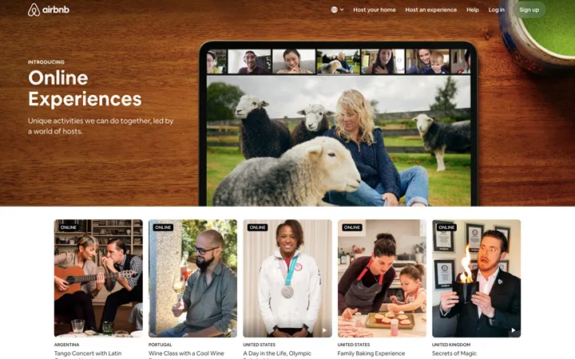
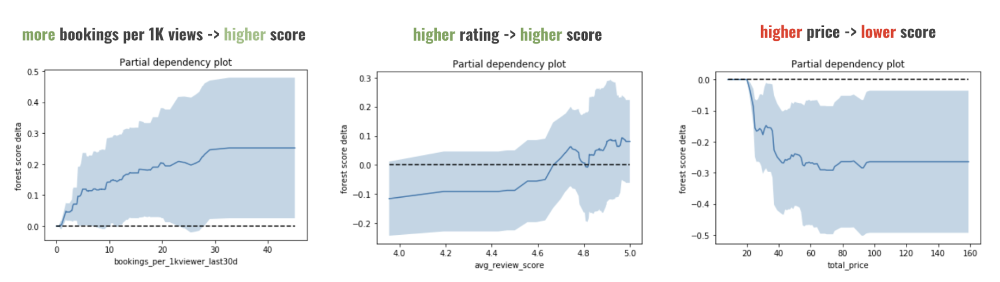
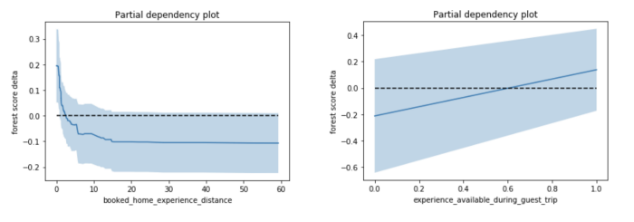
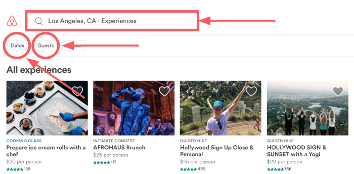
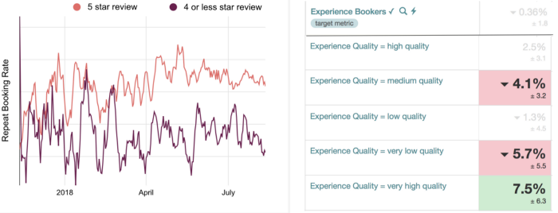
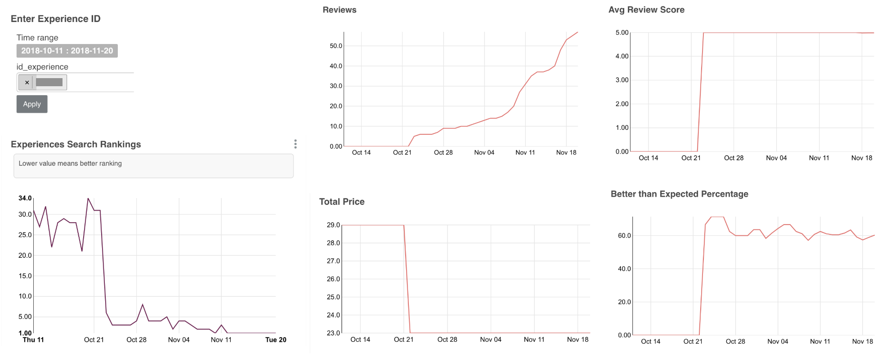
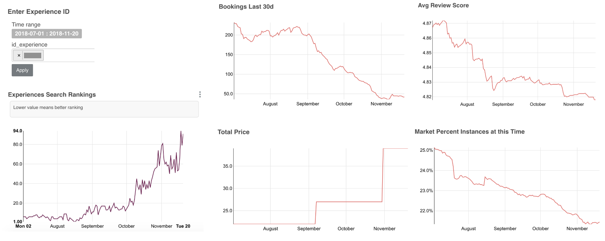
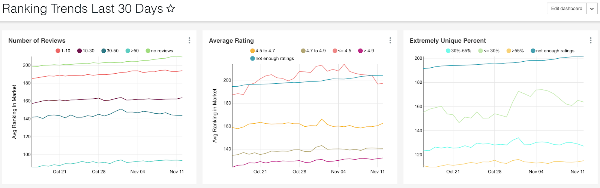
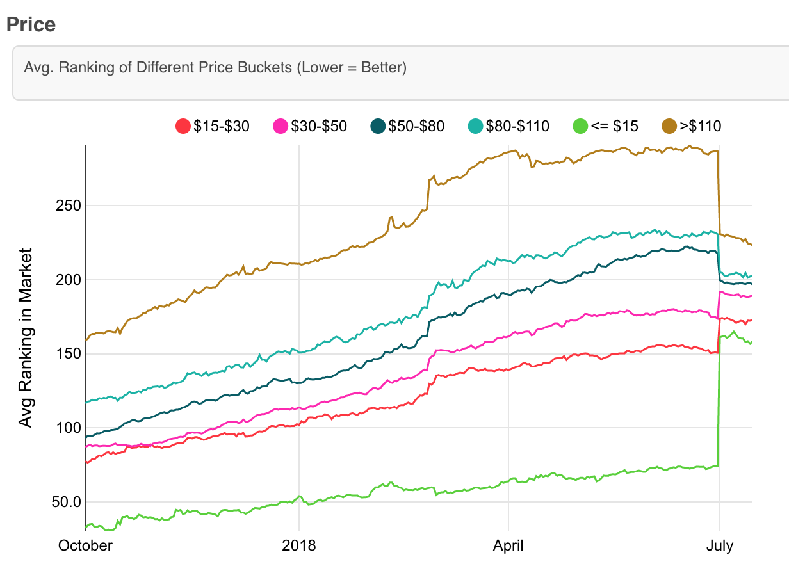
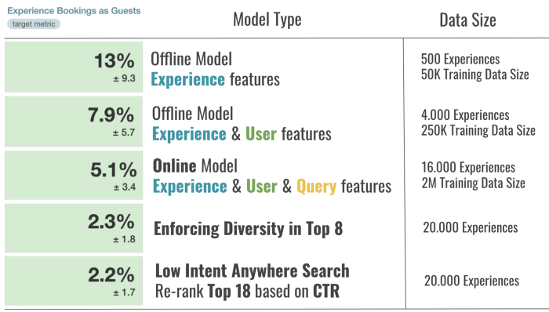

Airbnb Experiences is a one-of-a-kind offering by Airbnb where people get to experience the local culture of their hosts. These are handcrafted activities designed and led by expert hosts that offer a unique taste of the local scene and culture. Each experience is vetted for quality by a team of editors before it makes its way onto the platform. As the number of Experiences grew, Search & Discoverability, as well as Personalization, have become very important factors for the growth and success of the marketplace. But when Airbnb started the Experiences offering, they were not sure how to rank them.
In this story, we describe the stages of Experience Ranking development using machine learning at different growth phases of the marketplace, from small to mid-size and large. We will learn how Airbnb built and iterated on a machine learning Search Ranking platform for a new two-sided marketplace and how they helped it grow.
Airbnb Experiences was launched in November 2016 with 500 Experiences in 12 cities worldwide.
During 2017, Airbnb grew the business to 5,000 Experiences in 60 cities.
In 2018, the rapid growth continued, and Airbnb managed to bring Experiences to more than 1,000 destinations, including unique places like Easter Island, Tasmania, and Iceland. Airbnb finished the year strong with more than 20,000 active Experiences.
As the number of Experiences grew, Search & Discoverability, as well as Personalization, have become very important factors for the growth and success of the marketplace. But when Airbnb started the Experiences offering, they were not sure how to rank them.
In the beginning, the amount of Experiences that needed to be ranked in Search was small, and Airbnb just started collecting data on user interactions with Experiences (impressions, clicks, and bookings). At that moment, the best choice was to just randomly re-rank Experiences daily, until a small dataset is collected for development of the Stage 1 ML model.
To train the first machine learning model for ranking Experiences, Airbnb collected search logs (i.e. clicks) of users who ended up making bookings.
When labeling training data, Airbnb was mainly interested in two labels: experiences that were booked (which were treated as positive labels) and experiences that were clicked but not booked (which were treated as negative labels). In this manner, Airbnb collected a training dataset of 50,000 examples.
They decided to rank solely based on *Experience Features.* In total they built 25 features, some of which were:
Given the training data, labels, and features, Airbnb used the Gradient Boosted Decision Tree (GBDT) model. At this point, they treated the problem as binary classification with a log-loss loss function.
AUC and NDCG: They re-ranked the Experiences based on model scores (probabilities of booking) and tested where the booked Experience would rank among all Experiences the user clicked (the higher the better).
Partial dependency plot: In addition, to get a sense of what a trained model learned, they plotted partial dependency plots for several most important Experience features.

Since offline testing often has too many assumptions, e.g. in Airbnb's case it was limited to re-ranking what users clicked and not the entire inventory, they conducted an online experiment, i.e. A/B test, as the next step. They compared the Stage 1 ML model to the rule-based random ranking in terms of the number of bookings. The results were very encouraging as they were able to improve bookings by +13% with the Stage 1 ML ranking model.
The entire ranking pipeline, including training and scoring, was implemented offline and ran daily in Airflow. The output was just a complete ordering of all Experiences, i.e. an ordered list, which was uploaded to production machines and used every time a search was conducted to rank a subset of Experiences that satisfied the search criteria.
The stage 1 model was limited to using only Experience Features, and as a result, the ranking of Experiences was the same for all users. In addition, all query parameters (number of guests, dates, location, etc.) served only as filters for retrieval (e.g. fetch Paris Experiences available next week for 2 guests), and the ranking of Experiences did not change based on those inputs.
Two randomly chosen Experiences are likely to be very different, e.g. a Cooking Class vs. a Surf Lesson. At the same time, guests may have different interests and ideas of what they want to do on their trip, and it is our goal to capture that interest fast and serve the right content higher in search results. So, the next step was to add the Personalization capability to the ML ranking model.
Let's understand and validate the intuition behind 2 engineered features: Distance between Booked Home and Experience, and Experience available during Booked Trip.
Distance between Booked Home and Experience. Knowing Booked Home location (latitude and longitude) as well as Experience meeting location, we can compute their distance in miles. Data shows that users like convenience, i.e. large fraction of booked Airbnb Experiences are near booked Airbnb Home.
Experience available during Booked Trip. Given Home check-in and check-out dates, we have an idea on which dates the guest is looking to book Experiences and can mark Experiences as available or not during those dates.
These two features (in addition to others) were used when training the new ML ranking model. Below we show their partial dependency plots.

The plots confirmed that features behavior matches what we intuitively expected the model will learn, i.e. Experiences that are closer to Booked Home will rank higher (have higher scores), and Experiences that are available for Booked Trip dates will rank higher (which is very convenient because even in dateless search we can leverage trip dates).
Given the user's short-term search history, we can infer useful information that can help us personalize future searches:
As search traffic contains searches by both logged-in and logged-out users, Airbnb found it more appropriate to train two models, one with personalization features for logged-in users and one without personalization features that will serve log-out traffic. The main reason was that the logged-in model trained with personalization features relies too much on the presence of those features, and as such is not appropriate for usage on logged-out traffic.
Results showed that Personalization matters as they were able to improve bookings by +7.9% compared to the Stage 1 model.
Stage 2 implementation was a temporary solution used to validate personalization gains before investing more resources in building an Online Scoring Infrastructure in Stage 3, which was needed as both N and M are expected to grow much more.
After Airbnb demonstrated significant booking gains from iterating on their ML ranking model and after inventory and training data grew to the extent where training a more complex model is possible, they were ready to invest more engineering resources to build an Online Scoring Infrastructure and target more booking gains.
Moving to Online Scoring unlocks a whole new set of features that can be used: Query Feature

This means that we would be able to use the entered location, number of guests, and dates to engineer more features. For example,
In the online setting, Airbnb was also able to leverage the user's browser language setting to do language personalization on the fly. Below is an example of Stage 3 ML model ranking Experiences offered in Russian higher when browser language is Russian.
Finally, in the online setting we also know the Country which the user is searching from. We can use the country information to personalize the Experience ranking based on Categories preferred by users from those countries. Airbnb used this information to engineer several personalization features at the Origin — Destination level.
To train the model with *Query Features* Airbnb first added them to their historical training data. The inventory at that moment was 16,000 Experiences and they had more than 2 million labeled examples to be used in training with a total of 90 ranking features. As mentioned before, they trained two GBDT models:
The advantage of having an online scoring infrastructure is that we can use logged-in model for far more uses than before, because there is no need to pre-compute personalized rankings as we did in Stage 2. Airbnb used the logged-in model whenever personalization signals were available for a particular user id, else the model fall back to using logged-out model.
Airbnb conducted an A/B test to compare the Stage 3 models to Stage 2 models. Once again, they were able to grow the bookings, this time by +5.1%.
To implement online scoring of thousands of listings in real time, Airbnb have built their own ML infra in the context of their search service. There are mainly three parts of the infrastructure, 1) getting model input from various places in real time, 2) model deployment to production, and 3) model scoring.
The model requires three types of signals to conduct scoring: Experience Features, Query Features, and User Features. Different signals were stored differently depending on their size, update frequency, etc. Specifically, due to their large size (hundreds of millions of user keys), the User Features were stored in an online key-value store and search server boxes can look them up when a user does the search. The Experience Features are on the other hand not that large (tens of thousands of Experiences), and as such can be stored in memory of the search server boxes and read directly from there. Finally, the Query Features are not stored at all, and they are just read as they come in from the front end.
Experience and User Features are both updated daily as the Airflow pipeline feature generation job finishes. Airbnb is also working on transitioning some of the features to the online world, by using a key-value store that has both read and write capabilities which would allow them to update the features instantly as more data comes in (e.g. new experience reviews, new user clicks, etc.).
In the model deployment process, they transform the GBDT model file, which originally came from their training pipeline in JSON format, to an internal Java GBDT structure, and load it within the search service application when it starts.
During the scoring stage, they first pull in all the features (User, Experience, and Query Features) from their respective locations and concatenate them in a vector used as input to the model. Next, depending on if User Features are empty or not they decide which model to use, i.e. logged-out or logged-in model, respectively. Finally, they return the model scores for all Experiences and rank them on the page in descending order of the scores.
Up to this point the ranking model's objective was to grow bookings. However, a marketplace such as Airbnb Experiences may have several other secondary objectives, as we call them Business Rules, that can be achieved through machine learning.
One such important Business Rule is to Promote Quality. From the beginning they believed that if guests have a really good experience they will come back and book Experiences again in the near future. For that reason, they started collecting feedback from users in terms of 1) star ratings, ranging from 1 to 5, and 2) additional structured multiple-response feedback on whether the Experience was unique, better than expected, engaging, etc.
As more and more data became available to support their rebooking hypothesis, the trend became more clear. As it can be observed on the left in the figure below, guests who have had a great experience (leave a 5-star rating) are 1.5x more likely to rebook another Experience in the next 90 days compared to guests who have had a less good time (leave 4 star rating or lower).

This motivated them to experiment with their objective function, where they changed their binary classification (+1 = booked, -1 = click & not booked) to introduce weights in training data for different quality tiers (e.g. highest for very high quality bookings, lowest for very low quality bookings). The quality tiers were defined by their Quality Team via data analysis. For example:
When testing the model trained in such a way the A/B test results (on the right in the figure above) showed that they can leverage machine learning ranking to get more of v*ery high quality* bookings and less of very low quality bookings, while keeping the overall bookings neutral.
In a similar way, they successfully tackled several other secondary objectives:
For any two-sided marketplace it is very important to be able to explain why certain items rank the way they do.
In Airbnb's case it is valuable because they can:
To build out this capability they used Apache Superset and Airflow to create two dashboards:
In the figure below, there is an example of an Experience whose ranking (left panel) improved from position 30 to position 1 (top ranked). To explain why, we can look at the plots that track various statistics of that Experience (right panel), which are either directly used as features in the ML model or used to derive features.

It can clearly be observed that the ranking improved because number of reviews grew from 0 to 60, while maintaining a 5.0 review rating and >60% users said the Experience was better than expected. In addition, the host lowered the price, which may also have lead to the improvement of ranking.
In the next figure, there is an example of an Experience whose ranking degraded from position 4 to position 94. Once more, the signals which the ranking model uses as input can tell the story.

The Experience started getting bad reviews (avg. rating reduced from 4.87 to 4.82), host increased the price by $20, and overall booking numbers decreased. In addition, in that market the time of day that Experience is held at (early morning) became less and less popular (slight seasonality effect). All these factors combined lead to the ranking decline.
In addition, to be able to track what kind of ranking behavior they are enforcing it was useful to look at how certain groups of Experiences rank in their markets. In the figure below, there is a snapshot of dashboard where we can track average ranking (lower is better) of different dimensions.

For example, the left plot shows that Experiences with >50 reviews rank much better than experiences with 10–30 reviews. Looking at the other two plots we can see that on average Experiences with review rating of >4.9 rank the best (much better than ones with lower average rating) and that Experiences for which >55% users say their experience was unique rank much better than non-unique Experiences.
This type of dashboard is useful for making business decisions and modifications to the ranking algorithm to enforce better behaviors. For example, based on the figure that shows ranking trends of different price range groups (shown below) they noticed that very low price Experiences have too big of an advantage in ranking. They decided to try to reduce that advantage by removing price as one of the signals used by the ranking model.

The result of removing the price and retraining the model was that the difference in ranking reduced (after July 1st), without hurting overall bookings. This demonstrates the usefulness of reporting and how ranking can be manipulated using machine learning to achieve desired ranking behavior.

The main take-away is: "Don't wait until you have big data, you can do quite a bit with small data to help grow and improve your business."